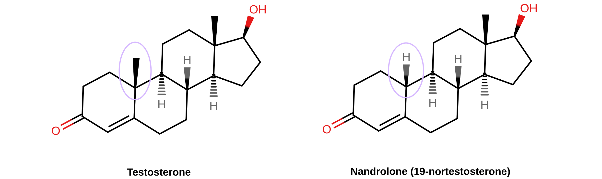

Nandrolone as a Potential Alternative Androgen with Reduced Androgenic Side Effects for Transfeminine and Transmasculine People
By Aly | First published March 20, 2020 | Last modified March 23, 2023
Abstract / TL;DR
Nandrolone, or 19-nortestosterone, is a unique androgen and anabolic steroid which is used in the form of injectable ester prodrugs like nandrolone decanoate. It is closely related to testosterone structurally but has a number of important pharmacological differences in comparison. These differences include inactivation by 5α-reductase rather than potentiation, less or no conversion into estradiol, and much greater progestogenic activity. The inactivation of nandrolone by 5α-reductase results in nandrolone theoretically having much lower androgenic strength than testosterone in skin, hair follicles, and the prostate, among other tissues. Consequently, nandrolone may have less propensity for oily skin, acne, facial/body hair growth, scalp hair loss, and prostate problems than testosterone. On the other hand, nandrolone is theoretically expected to have full androgenic efficacy in most other tissues, including bone, fat, and muscle (and hence of masculine skeletal, fat, and muscular changes). This is also likely to be the case when it comes to voice, bottom growth, and sexual function. The reduced androgenic impact of nandrolone in skin and hair follicles relative to testosterone make it a favorable potential alternative option for androgen therapy both for transfeminine people and for some transmasculine people.
Introduction
Nandrolone, also known chemically as 19-nortestosterone (19-NT), is an androgen and anabolic steroid (AAS) similarly to testosterone (T). It is used as a medication by intramuscular or subcutaneous injection in the form of longer-acting esters like nandrolone decanoate (ND; Deca-Durabolin) and nandrolone phenylpropionate (NPP; Durabolin), which are converted into nandrolone in the body. This is analogous to longer-acting testosterone esters like testosterone enanthate (TE) and testosterone undecanoate (TU) and their conversion in the body into testosterone. Nandrolone is used in medicine for a variety of indications that benefit from anabolic effects in tissues like muscle, bone, and kidneys. Examples include wasting syndromes, osteoporosis, kidney disease, and anemia. It is used not only in men but also in women, for instance to prevent and treat postmenopausal osteoporosis in women who can’t tolerate estrogens or in whom estrogens can’t be taken. Nandrolone has additionally been advocated for use in androgen replacement therapy for women (Davis, 1999).
Nandrolone is closely related to testosterone in terms of chemical structure, pharmacodynamic actions, and disposition in the body. At the same time however, nandrolone has a key difference from testosterone that makes it a very favorable alternative option for use as an androgen in transgender hormone therapy. This is the case not only for transfeminine people but also for transmasculine people. This property of nandrolone is that it is inactivated by 5α-reductase in tissues that express this enzyme. This is in contrast to testosterone, which is potentiated in such tissues via conversion into dihydrotestosterone (DHT). Because of this difference, nandrolone has normal androgenic effects in most of the body but a greatly reduced potential for androgenic effects in skin and hair follicles relative to testosterone. As a result, nandrolone has a variably reduced potential for androgenic skin and hair side effects such as oily skin, acne, facial and body hair growth, and scalp hair loss.
Because of its favorable profile relative to testosterone, nandrolone has been advocated for use in androgen replacement therapy in cisgender men (Wu & Kovac, 2016; Pan & Kovac, 2016). It has also been studied for use in male hormonal contraception as an alternative and replacement for testosterone (Knuth et al., 1986; Nieschlag, 2010; Nieschlag & Behre, 2012). Nandrolone is advantageous for cisgender men not only due to preservation of scalp hair but also due to its lower stimulation of the prostate gland. As a result of its more favorable profile in terms of skin and hair follicles, nandrolone is an underappreciated alternative possibility relative to testosterone for use not only in cisgender people but also in transfeminine and transmasculine people.
Chemistry of Nandrolone
Nandrolone is chemically known as 19-nortestosterone. It is very close to testosterone in terms of chemical structure, the only difference between the two compounds being that the C19 methyl group of testosterone has been removed in the case of nandrolone. Nandrolone is not a synthetic compound; it occurs naturally in the human body in trace amounts as an intermediate in the conversion of testosterone to estradiol by the enzyme aromatase (Bricout & White, 2004). As such, although nandrolone couldn’t be said to be “bioidentical”, it’s quite similar to testosterone.
|  |
|---|
| Figure: Chemical structures of testosterone and nandrolone (19-nortestosterone). The structural difference between testosterone and nandrolone is at the C19 position and is highlighted by the circled areas. |
A variety of AAS chemical derivatives of nandrolone exist. Examples include normethandrone (17α-methyl-19-nortestosterone), norethandrolone (17α-ethyl-19-nortestosterone), trestolone (7α-methyl-19-nortestosterone; MENT), dimethandrolone (DMA; 7α,11β-dimethyl-19-nortestosterone), and 11β-methyl-19-nortestosterone (11β-MNT). The latter three have been proposed and/or studied for use in androgen replacement therapy and male hormonal contraception similarly to nandrolone (Sundaram, Kumar, & Bardin, 1994; Sundaram & Kumar, 2002; Anderson et al., 2003; Buvat et al., 2013; Nieschlag, Kumar, & Sitruk-Ware, 2013; Thirumalai et al., 2019; Wu et al., 2019; Yuen et al., 2020). The first male oral contraceptive pills to be marketed may end up containing dimethandrolone and/or 11β-MNT.
Pharmacology of Nandrolone
Androgenic Activity and 5α-Reductase
Nandrolone is an agonist of the androgen receptor (AR) similarly to testosterone. It shows higher affinity for the AR than does testosterone and has almost no binding affinity for sex hormone-binding globulin (SHBG) however. For these reasons, nandrolone has about 2.5- to 5-fold higher potency than testosterone in rats on measures of general AR agonistic strength, such as stimulation of muscle growth (Sundaram et al., 1995; Tóth & Zakár, 1986; Wiki; Winters, 1976). It is likewise a more potent AAS than testosterone in humans, and is used medically at lower doses in comparison (Wiki).
Testosterone is a substrate for 5α-reductase in tissues that express this enzyme like skin, hair follicles, prostate gland, and seminal vesicles, among others. It is converted by 5α-reductase into dihydrotestosterone (DHT), an androgen with much higher AR affinity and AR agonistic potency than that of testosterone (Wiki). Consequently, it is estimated that the effects of testosterone are potentiated by 2- to 3-fold via conversion into DHT in tissues that express 5α-reductase (Sundaram et al., 1995). The role of DHT in the effects of testosterone is demonstrated by a rare intersex condition known as 5α-reductase type 2 deficiency, as well as by 5α-reductase inhibitors (5α-RIs) like finasteride and dutasteride (Wiki; Wiki). Men with 5α-reductase type 2 deficiency are reported to have reduced facial hair, a female-like pattern of body hair (with terminal hair largely restricted to the underarms and lower pubic triangle), and no scalp hair recession in the temples nor scalp hair loss in general. Conversely, other aspects of male secondary sexual development, like voice deepening, muscle growth, bone changes, and pubertal penile enlargement, are all normal in the condition. In addition, no feminization or gynecomastia occurs. Hence, adults with 5α-reductase type 2 deficiency have a masculine appearance (Imperato-McGinley & Peterson, 1976; Peterson et al., 1977; Photos). In published photographs of individuals with the condition however, features like lack of body hair and rounded feminine hairlines can be noted.
5α-Reductase inhibitors have similar effects relative to the profile of 5α-reductase type 2 deficiency. For this reason, they are used in the treatment and prevention of scalp hair loss in men and off-label for hirsutism (excessive facial/body hair growth) in women. They greatly slow the rate of scalp hair loss over time in men. For example, a large 5-year randomized controlled trial showed that in men with diagnosed scalp hair loss, 100% of those who received placebo had significant further scalp hair loss whereas only 35% of those who received finasteride had further scalp hair loss (Propecia label). Low-quality evidence suggests that finasteride has similar effectiveness to antiandrogens like spironolactone and flutamide in the treatment of hirsutism in women (Barrionuevo et al., 2018; van Zuuren et al., 2015). Dutasteride has similar or greater effectiveness than finasteride for scalp hair loss in men (Arif et al., 2017), whereas it hasn’t yet been studied in the treatment of hirsutism (Wiki).
5α-Reductase is the key to the favorable differences between testosterone and nandrolone. Both testosterone and nandrolone are substrates for 5α-reductase and have similar affinity for this enzyme (Tóth & Zakár, 1986). But whereas testosterone is potentiated via conversion into DHT in tissues that express 5α-reductase, nandrolone is inactivated by 5α-reductase in these tissues (Kicman, 2008; Tóth, 2009). This is because the 5α-reduced metabolite of nandrolone, 5α-dihydronandrolone (DHN), is a weaker AR agonist with much lower affinity for the AR than nandrolone (Tóth & Zakár, 1986; Kumar et al., 1999). The following table shows AR and SHBG relative binding affinities (RBA) of testosterone, nandrolone, trestolone, and their 5α-reduced forms (Kumar et al., 1999):
| Steroid | AR RBA | SHBG RBA |
|---|---|---|
| Testosterone | 100% | 100% |
| 5α-Dihydrotestosterone | 290% | 340% |
| Nandrolone | 230% | 5% |
| 5α-Dihydronandrolone | 10% | 5% |
| Trestolone | 380% | 6% |
| 5α-Dihydrotrestolone | 30% | 2% |
In rodents, although nandrolone has about 3-fold higher anabolic or muscle-stimulating potency than testosterone, its androgenic potency in the prostate gland and seminal vesicles is only about 20 to 40% of that of testosterone (Sundaram et al., 1995; Tóth & Zakár, 1986; Wiki). This works out to an approximate 11:1 dissociation between the effects of nandrolone in tissues with little or no 5α-reductase (muscle) versus with high 5α-reductase (prostate gland, seminal vesicles) in rodents (Wiki). The exact ratio of potency between these tissues in humans is unknown, and extrapolation from rodents should be cautioned against. In any case, an analogous dissociation of some level can be anticipated. As such, nandrolone can be expected to have high AR agonistic strength in most of the body, where 5α-reductase has minimal expression (e.g., fat, muscle, bone), but much lower potency in tissues with high 5α-reductase expression, like skin, hair follicles, the prostate gland, and the seminal vesicles.
It’s important to be clear that nandrolone is not simply akin to taking testosterone with a 5α-reductase inhibitor like dutasteride to block 5α-reductase. This is because nandrolone isn’t merely not potentiated by 5α-reductase, it’s weakened by 5α-reductase. For this reason, 5α-reductase inhibitors actually increase the androgenic strength of nandrolone in tissues that express 5α-reductase like the prostate gland in rodents (Sundaram et al., 1995). (And, for this reason, nandrolone should not be taken with a 5α-reductase inhibitor, in contrast to testosterone.) In other words, nandrolone goes beyond testosterone plus a 5α-reductase inhibitor in terms of the dissociation of its potency between tissues that express 5α-reductase and tissues that do not. As a result, nandrolone has much lower androgenic strength in such tissues than does the combination of testosterone plus a 5α-reductase inhibitor. Nandrolone also appears to have lower strength in tissues that express 5α-reductase than do most other AAS, for instance synthetic DHT derivatives like oxandrolone and stanozolol (Tóth & Zakár, 1986). This is because these AAS are not substrates for 5α-reductase and hence are neither potentiated nor weakened by 5α-reductase, similarly to testosterone with a 5α-reductase inhibitor. The inactivation of nandrolone by 5α-reductase makes it very unique among AAS and AR agonists. Only nandrolone and a few of its derivatives like normethandrone and norethandrolone have this very special property.
Testosterone and nandrolone may also be non-identical in their androgenic actions and effects for reasons other than metabolism. This is because different AR agonists including strong androgens like testosterone and DHT, weak androgens like dehydroepiandrosterone (DHEA) and androstenedione (A4), and predominantly anabolic androgens like nandrolone, oxandrolone, and stanozolol, have been shown to produce differential AR-mediated changes in gene expression (Holterhus, Piefke, & Hiort, 2002; Kicman, 2008; Hiort, 2013). However, nandrolone was more similar in its profile to testosterone than the synthetic AAS. In any case, the clinical implications of these differences in relation to therapeutic use of testosterone versus nandrolone, if any, are unknown.
Estrogenic Activity and Estradiol Replacement
Testosterone is aromatized in small amounts into estradiol, and for this reason, testosterone has estrogenic activity. This is important as estradiol is critical for maintaining healthy bone mineral density in men (and hence preventing bone loss and osteopenia/osteoporosis) and also has many other important physiological effects in men (Simpson & Jones, 2007; Wibowo, Schellhammer, & Wassersug, 2011; Cooke et al., 2017; Russell & Grossmann, 2019). It may have positive effects on sexual desire in men as well (Wibowo & Wassersug, 2013). As such, all men need some estradiol.
In relation to the fact that nandrolone is an intermediate in the aromatase-mediated reaction that converts testosterone into estradiol, both testosterone and nandrolone are transformed into estradiol, and hence estradiol is their specific estrogen metabolite. Paradoxically however, whereas it has the same potential for 5α-reduction as testosterone, nandrolone as a medication is aromatized into estradiol virtually not at all (Handelsman, 2016). In accordance, nandrolone suppresses estradiol levels in men and results in low estradiol levels even at very high doses (Friedl, 1991; Hobbs et al., 1993; Hobbs, Jones, & Plymate, 1996; Behre et al., 2001). The following table gives an example of estradiol (E2) levels in men with high-dose testosterone versus high-dose nandrolone (Friedl, 1991):
| Drug and dose | E2 before | E2 after | Change |
|---|---|---|---|
| Testosterone enanthate 300 mg/week i.m. | 32 ± 4.6 pg/mL | 79 ± 9.3 pg/mL | +147% |
| Nandrolone decanoate 300 mg/week i.m. | 40 ± 6.0 pg/mL | 14 ± 1.6 pg/mL | –65% |
Testosterone and nandrolone themselves don’t have significant affinity for the estrogen receptors nor intrinsic estrogenic activity outside of aromatization to estradiol (Kuiper et al., 1997; Table). Although androgens also help to maintain bone mineral density and AAS like nandrolone are used to treat osteoporosis in postmenopausal women (Geusens, 1995; Ebeling, 2010), estrogens are comparatively much more important for maintenance of bone mineral density and prevention of osteoporosis in both men and women (Wiki). Studies of high-dose nandrolone and androstanolone (DHT) have shown that these non-aromatizable AAS are not adequate for maintenance of bone mineral density in men, whereas the aromatizable testosterone is effective for such purposes (Ronald et al., 1998; Crawford et al., 2003; Lemmey et al., 2013; Sartorius, Ly, & Handelsman, 2014; Čeponis et al., 2017). Non-aromatizable AAS are likewise inferior to estrogen and estrogen–progestogen therapy for maintaining bone mineral density in postmenopausal women (Lauritzen, 1984 [Graph]; Hassager et al., 1991).
Because of its minimal conversion into estradiol, nandrolone should be used as an androgen in transmasculine people only in combination with low-dose estradiol to replace the lost estradiol that would otherwise be provided by testosterone. Estradiol levels in men are on average around 30 pg/mL, and estradiol levels of at least 20 to 30 pg/mL appear to be necessary for maintenance of bone density in men (Doran et al., 2001). A low-dose transdermal estradiol patch, for instance 14 to 25 μg/day, is likely to be adequate for achieving such levels. Alternatively, another option like transdermal estradiol gel (e.g., 0.75–1 mg/day) or low-dose oral estradiol (e.g., 0.5–1 mg/day) may be used instead.
Progestogenic Activity
A little-known fact about testosterone is that it has weak affinity for the progesterone receptor (PR) and is a weak progestogen (Wiki; Bardin & Janne, 1986). This property probably has no significance under normal physiological circumstances, but testosterone can in any case produce progestogenic effects such as endometrial transformation and progesterone-like lobuloalveolar development of the breasts at very high doses (Bourg, 1950; Bässler, 1970; Jänne et al., 1978; Bardin & Janne, 1986).
Nandrolone likewise has progestogenic activity. However, the progestogenic activity of nandrolone is greatly enhanced relative to that of testosterone. The affinity of nandrolone for the PR is 5- to 20-fold higher than that of testosterone and its progestogenic potency is correspondingly improved (Wiki; Wiki; Bardin & Janne, 1986). Despite this however, the progestogenic potency of nandrolone is still relatively low. For instance, its affinity for the PR is only about 10 to 20% of that of progesterone and the nandrolone-derived progestin norethisterone (also known as 17α-ethynyl-19-nortestosterone). At the same time however, nandrolone is used at relatively large doses compared to norethisterone. This may help to compensate for its lower progestogenic potency and may allow for significant progestogenic effects at typical clinical doses (Camerino & Sciaky, 1975).
The following table shows human and rabbit PR RBAs and relative progestogenic activity (as measured by in-vivo induction of uteroglobin synthesis in rabbit uterus) of progesterone and several AAS including testosterone and nandrolone (Jänne et al., 1978; Bardin & Janne, 1986):
| Steroid | hPR RBA | rbPR RBA | Progestogenic activity (rabbit) |
|---|---|---|---|
| Progesterone | 100% | 100% | 100% |
| Testosterone | 1.6% | 1.6% | 0.9% |
| Dihydrotestosterone | 3.3% | 3.3% | 1.9% |
| Nandrolone | 8.9% | 12% | 5.2% |
| Methyltestosterone | 4.6% | 3.4% | 0.6% |
| Norethandrolone | 130% | 70% | 115% |
The development of nandrolone was an intermediate step in the eventual development of the 19-nortestosterone group of progestins, which are widely used in hormonal birth control. These include progestins like norethisterone and levonorgestrel, among many others.
Advantages of Nandrolone Over Testosterone
Because of its substantially lower androgenic strength in tissues that have high 5α-reductase expression relative to tissues that have minimal or no 5α-reductase expression, nandrolone is likely to have normal androgenic effects in muscle, bone, fat, and most other tissues but much weaker androgenic strength in skin and hair follicles than equivalent doses of testosterone. As a result of this, although nandrolone has high capacity for producing most aspects of masculinization, it has a lower potential for many of the undesirable androgenic skin and hair side effects of testosterone, including oily skin, acne, facial and body hair growth, and scalp hair loss. This may allow for unique advantages of nandrolone over testosterone in transfeminine and transmasculine hormone therapy.
The benefits of nandrolone are expected to partially differ in transfeminine people relative to transmasculine people however. This is due to the different doses of nandrolone used in these individuals, namely low, female replacement doses in transfeminine people and full, male replacement doses in transmasculine people. As an example, transmasculine people taking full male androgen replacement doses should probably expect no less oily skin or acne with nandrolone than with testosterone. This is because very low levels of testosterone are necessary for such effects, as evidenced by the fact that acne prevalence and severity is similar in females compared to males (Skroza et al., 2018) despite the fact that testosterone levels are 20-fold lower in women than in men (Styne & Grumbach, 2016). Conversely, transfeminine people taking nandrolone at doses equivalent to the effect of testosterone levels in the normal female range may experience less or possibly no oily skin or acne with nandrolone compared to use of testosterone instead. This is due to the equivalent testosterone levels being far closer to the biological threshold for manifestation of such effects.
Nandrolone can be anticipated to have far less potential for scalp hair loss relative to testosterone in transmasculine people (Wu & Kovac, 2016; Pan & Kovac, 2016). This is related to the lack of scalp hair loss in men with 5α-reductase type 2 deficiency and the high effectiveness of 5α-reductase inhibitors for scalp hair loss. However, nandrolone is theoretically even better than testosterone plus a 5α-reductase inhibitor when it comes to preservation of scalp hair. This is because again, nandrolone is not simply not potentiated, but is inactivated in tissues that express 5α-reductase. Nandrolone replacement of testosterone represents a highly promising treatment for scalp hair loss in men that offers potentially superior effectiveness to 5α-reductase inhibitors. Moreover, since nandrolone isn’t an inhibitor of 5α-reductase, it doesn’t interfere with 5α-reduced neurosteroid synthesis. Hence, nandrolone doesn’t have the possible psychiatric side effects that have been associated with 5α-reductase inhibitors, for instance depression (Irwig, 2015; Kuhl & Wiegratz, 2017; Wiki).
On the basis of 5α-reductase type 2 deficiency, nandrolone may be expected to produce reduced facial and particularly body hair growth relative to testosterone in transmasculine people. Essentially no body or facial hair growth is likely to occur with nandrolone at doses equivalent to female-range testosterone levels in transfeminine people, and even at supraphysiological levels, facial and body hair growth is likely to be less than with testosterone. However, facial and body hirsutism have nonetheless been reported with nandrolone at postmenopausal osteoporosis doses (Need et al., 1989; Passeri et al., 1993; Geusens, 1995; Flicker et al., 1997).
For transmasculine people who want the benefits of nandrolone except the lesser facial hair growth, topical testosterone to the beard area can potentially be used in conjunction with nandrolone injections to restore full facial hair growth. Another possibility for achieving effects of both testosterone and nandrolone in transmasculine people could be to start on testosterone and use it for a few years, allowing for facial/body hair growth and hairline masculinization, and then switch from testosterone to nandrolone for long-term therapy, allowing for preservation of scalp hair.
One of the reasons that nandrolone is attractive for androgen replacement therapy in cisgender men is that it has very weak relative effects in the prostate gland compared to testosterone. This is due to inactivation of nandrolone in the prostate gland by 5α-reductase similarly to other tissues that express this enzyme. It is anticipated that long-term androgen replacement therapy with nandrolone might allow for a reduced risk of enlarged prostate and prostate cancer compared to testosterone in men (Wu & Kovac, 2016; Pan & Kovac, 2016). As transfeminine people also have prostate glands, the weak effects of nandrolone in the prostate are potentially of relevance to us as well. However, due to estrogen therapy and androgen deprivation, the prostate is atrophied in transfeminine people and prostate cancer is very rare (Wiki). In relation to this, the favorable prostate profile of nandrolone may be of little significance for transfeminine people.
Although nandrolone is quite promising for transgender hormone therapy, it is important to be clear that there are currently no quality clinical studies comparing it to testosterone and showing that it is less androgenic in terms of skin and hair effects (even if there is strong theoretical basis for this notion, particularly in the case of scalp hair loss). Nor are there any studies demonstrating with certainty that it is as effective as testosterone in terms of inducing general masculinization. Moreover, the appropriate dosages of nandrolone for use in androgen replacement in women and men are uncertain. Finally, nandrolone has been little-studied for androgen replacement and its long-term tolerability and health safety for this use haven’t been properly characterized. For these reasons, androgen replacement with nandrolone in cisgender men and transmasculine people is an experimental therapy. Additional research is needed to properly characterize nandrolone for this indication.
Androgen Replacement in Transfeminine People
Some believe that testosterone is important in women for mood, well-being, energy, sexual desire and function, general health, and for other reasons. Androgen levels and activity may be low in many transfeminine people due to hormone therapy and/or gonadectomy, raising concerns about androgen deficiency. However, there is little or no change in androgen levels with natural menopause in cisgender women and only a small decrease in androgen levels with ovariectomy in women (Liu & Handelsman, 1998). Moreover, there is inadequate evidence to support claims of benefit with androgen replacement therapy in women at present, and there are no well-supported benefits of female-range doses of testosterone (Wiki). For these reasons, androgen replacement therapy in women is controversial (Liu & Handelsman, 1998).
Testosterone does stimulate sexual desire in women, but only at levels that are above the normal female range (>50 ng/dL) (Cappelletti & Wallen, 2016; Wiki). And even with high testosterone levels of 80 to 150 ng/dL, stimulation of sexual desire in women is modest (Cappelletti & Wallen, 2016; Wiki). It is likely that estradiol rather than testosterone (or progesterone) is the key sex hormone for sexual desire in women (Cappelletti & Wallen, 2016; Aly, 2020).
Androgens can have detrimental effects in transfeminine people. They can cause androgenic and masculinizing effects like oily skin, acne, seborrhea, facial/body hair growth, scalp hair loss, and voice deepening, among others. In addition, androgens oppose the effects of estrogens in the breasts, and may inhibit breast development even with low-level exposure or physiological levels in females (Dimitrakakis et al., 2003; Peters et al., 2011; Sas et al., 2014; Barbieri, 2017).
For these reasons, transfeminine people don’t necessarily require androgen replacement, and it shouldn’t be routinely used out of concern of androgen deficiency. In any case, some transfeminine people insist on androgen replacement, and others desire supraphysiological levels of androgens for purposes like stimulating libido or helping to build and maintain muscle mass. There is some evidence that even physiological levels of testosterone may help to support muscle mass in women (Huang & Basaria, 2017). Moreover, in transfeminine people who are fully hormonally transitioned, breast development is complete, and hence inhibition of the breasts by androgens is no longer a concern. Another potentially useful indication of androgens in transfeminine people is to counteract cellulite (Wiki; Gruber et al., 2002; Avram, 2004). Since nandrolone has full androgenic potential in fat tissue, it may be similarly effective as testosterone for this purpose. However, there are no good studies of androgens for treatment of cellulite at this time.
Although androgen replacement therapy isn’t recommended for cisgender women or transfeminine people because of a lack of evidence of benefit and potential adverse effects, nandrolone is a very favorable alternative to testosterone for such purposes in those who nonetheless opt for such therapy. This is due to its improved skin and hair profile and hence a probable lower risk of undesirable effects.
Additional Topics on Nandrolone
This section is for additional topics on nandrolone as an androgen in transfeminine and transmasculine people, including its availability, dosage, androgenic/masculinizing effects besides skin and hair (e.g., voice deepening, bottom growth/clitoral enlargement, sexual effects), and liver safety.
Availability of Nandrolone
Nandrolone esters remain widely available for medical use throughout the world (Drugs.com). However, the availability of AAS, including nandrolone esters, has become increasingly limited over time. The shorter-acting ester nandrolone phenylpropionate is no longer available in the United States or many other countries, and the more favorable longer-acting nandrolone decanoate was discontinued in the United States in 2019. However, nandrolone decanoate remains available from compounding pharmacies in the United States, for instance AnazaoHealth. It is only available from this particular pharmacy at a very high concentration of 200 mg/mL however, which although a potentially workable concentration for use in transmasculine people, is likely completely impractical for use in transfeminine people. Compounding pharmacies might be able to do custom concentrations upon request though.
Another potential means of delivering nandrolone is via an orally active nandrolone androgen prohormone like 19-nordehydroepiandrosterone (19-nor-DHEA). This compound is converted into nandrolone analogously to the use of DHEA as a prohormone of testosterone (Wiki). It is sold as an over-the-counter supplement from certain online vendors, similarly to DHEA. 19-Nor-DHEA may be a more suitable option for transfeminine people due to the lower doses needed and less suitable for transmasculine people due to the much higher doses required.
Dosage of Nandrolone
The dosage of nandrolone for use in androgen replacement therapy in women and men hasn’t been established. Hence, we don’t completely know what the appropriate dose is for use in transfeminine and transmasculine hormone therapy. In any case, it is possible for us to estimate.
Nandrolone is closely related to testosterone but is roughly 3-fold more potent in rodents (Tóth & Zakár, 1986). We’re not sure how much more potent nandrolone is in humans in comparison. Some clinical studies comparing nandrolone and testosterone have been conducted but we nonetheless don’t have exact figures at this time (Neff et al., 1981; Friedl et al., 1989; Friedl, 1991; Hobbs et al., 1993; Hobbs, Jones, & Plymate, 1996; Crawford et al., 2003; Gold et al., 2006; Sardar et al., 2010). In any case, 150–200 mg/2 weeks nandrolone decanoate i.m. resulted in changes in body composition that were about twice as large as those of 200–250 mg/2 weeks testosterone esters i.m. in men with wasting conditions (Crawford et al., 2003; Gold et al., 2006; Sardar et al., 2010). The findings of these studies are roughly in line with 3-fold greater potency of nandrolone relative to testosterone.
One review recommended a clinical dose range in males of 50–400 mg/2–4 weeks for testosterone enanthate or cypionate but 50–100/3–4 weeks for nandrolone decanoate (Hickson et al., 1989). This is also in line with several-fold higher potency of nandrolone relative to testosterone.
Dosage for Transmasculine People
A typical dosage of testosterone enanthate for use in androgen replacement therapy in cisgender and transgender men is 50 to 100 mg once per week by intramuscular injection (Wiki; Wiki). Hence, an appropriate dosage of nandrolone decanoate, assuming 3-fold greater potency than testosterone, might be about 16.7 to 33.3 mg once per week by intramuscular injection (ignoring the small differences in molecular weight between testosterone enanthate and nandrolone decanoate). However, it must be emphasized that these doses are merely educated guesses. It’s notable that these doses are quite similar to those used in postmenopausal osteoporosis in women (about 12.5 to 25 mg per week total). Hence, although such doses have certainly been associated with masculinizing effects in women, they might be suboptimal in terms of masculinization for transmasculine people. Consequently, it’s possible that a higher dose, like 50 mg once per week, might be more appropriate. In addition to weekly use, nandrolone decanoate has a duration suitable for use once every 2 weeks (Graphs).
Nandrolone hexyloxyphenylpropionate (NHPP; brand name Anadur) was studied as a male hormonal contraceptive by the World Health Organization and others at a dose of 200 mg/3 weeks i.m. in combination with depot medroxyprogesterone acetate (Knuth et al., 1986; Nieschlag, 2010; Nieschlag & Behre, 2012). It was used as a replacement and alternative for testosterone and was given at a dosage of about 66.7 mg once per week. However, this was an intentionally supraphysiological dosage which was selected to achieve a male contraceptive effect, as suggested by suppression of gonadotropins to undetectable levels (Knuth et al., 1985). Hence, although safe and well-tolerated in limited studies, it might be a high dosage for transmasculine hormone therapy. Very high doses of nandrolone can reproduce the full spectrum of androgenic effects of testosterone, and hence doses of nandrolone that are too high may serve to nullify its advantages over testosterone (van der Vies, 1985).
Dosage for Transfeminine People
In postmenopausal women, nandrolone decanoate has been used for general androgen replacement at a dose of 25 to 50 mg once every 6 to 12 weeks (about 2–8 mg/week or 0.29–1.14 mg/day), and for prevention and treatment of osteoporosis at a dose of 50 mg once every 2 to 4 weeks (about 12.5–25 mg/week or 1.8–3.6 mg/day) (Wiki; Table). However, these doses of nandrolone decanoate are likely to be highly excessive for physiological androgen replacement in women and transfeminine people and are probably also spaced too widely in terms of dosing interval. This is based on the following: (1) normal production of testosterone in premenopausal women is about 150 μg/day; (2) nandrolone is more potent as an androgen receptor agonist than testosterone; and (3) pharmacokinetic concentration–time curves for nandrolone decanoate suggest that an appropriate dosing interval is once every 1 to 2 weeks (Graphs). Indeed, nandrolone decanoate at 50 mg/2–4 weeks has been found to produce significant masculinizing effects in women with long-term use (Geusens, 1995; Wiki). Since nandrolone has high theoretical masculinizing potential in most tissues in the body, like muscle, bone, fat, and vocal tissue, it’s very important that transfeminine people don’t take doses that are too large.
Androgenic and Masculinizing Effects Besides Skin and Hair
Nandrolone has sometimes been described as “non-masculinizing” or “minimally virilizing”, but this is misleading and inaccurate. Nandrolone has high theoretical potential to produce masculinizing skeletal, fat, and muscular effects, like growth of muscles, widening of shoulders, masculine enlargement, elongation, and shaping of bones, and masculine distribution of fat. It also has high capacity to produce voice deepening (the vocal tissue notably being part muscle). The only clear differences in masculinizing effect between nandrolone and testosterone are that nandrolone has a greatly reduced theoretical potential for androgenic effect in skin and hair follicles. Succinctly, nandrolone could be thought of as testosterone with minimization of the undesirable skin and hair effects.
Voice Deepening with Nandrolone
The vocal tissue, consisting of the vocal cords and the larynx, are part muscle, and 5α-reductase is expressed minimally or not at all in this tissue (Bhagavan, 2002; Kicman, 2008). Accordingly, voice deepening is normal in individuals with 5α-reductase type 2 deficiency (Imperato-McGinley & Zhu, 2002). As such, nandrolone would be expected to produce voice deepening similarly to testosterone. In accordance, voice deepening has been reported with nandrolone in women at doses used in postmenopausal osteoporosis (Gerritsma et al., 1994; Geusens, 1995; Frisoli et al., 2005). There are case reports of severe and complete masculinization of the voice in women treated with excessive doses of nandrolone (Damsté, 1964; Brodnitz, 1971; Baker, 1999). Voice changes have also been seen with nandrolone derivatives like normethandrone (Feldman et al., 1960).
Bottom Growth with Nandrolone
DHT is required for normal male sexual differentiation of the genitals during prenatal development. This is evidenced by 5α-reductase type 2 deficiency, in which the genitals are ambiguous but overall more female-like at birth and in childhood (Wiki). Although DHT is critical for prenatal genital masculinization, the same may not be true for pubertal development of the penis (Hiort, 2013). Individuals with 5α-reductase type 2 deficiency undergo masculinization of the genitals at puberty such that a small and near-functional penis develops (Peterson et al., 1977; Marks, 2004; Hiort, 2013; Photos). This is so striking that males with 5α-reductase type 2 deficiency in the Dominican Republic are referred to as “guevedoces”, which is said to literally mean “penis at 12”.
As 5α-reductase may not be critical for penile enlargement at puberty, nandrolone may allow for no less bottom growth (clitoral enlargement) in transmasculine people than does testosterone. Indeed, nandrolone has been reported to produce clitoral enlargement as a side effect in women and penile growth in prepubertal boys (Camerino & Sala, 1960; Camerino & Sciaky, 1975). Similar findings have been made for derivatives of nandrolone like normethandrone and norethandrolone (Feldman et al., 1960; Roche, Towns, & Wettenhall, 1963; Kirschvink et al., 1963; Prunty et al., 1958).
Sexual Effects of Nandrolone
Libido is normal in men with 5α-reductase type 2 deficiency (Imperato-McGinley & Zhu, 2002; Azzouni et al., 2012) and 5α-reductase inhibitors have only a small negative effect on sexual desire and function in men (Trost, Saitz, & Hellstrom, 2013; Mella et al., 2010; Hirshburg et al., 2016). Accordingly, nandrolone has been shown to maintain sexual function in men similarly to testosterone (Schürmeyer et al., 1984; Knuth et al., 1985; Knuth et al., 1986; Knuth et al., 1989; Behre et al., 1992; WHO, 1993; Behre et al., 2001). This has included libido, erection frequency, erectile function, and sexual activity. Trestolone has also been shown to maintain sexual desire and function in men similarly to testosterone (Suvisaari, 2000; Anderson et al., 1999; Anderson et al., 2003). In addition, use of trestolone for the treatment of breast cancer in women stimulated libido to such an extent that many of the women felt uncomfortable and chose to discontinue it (Suvisaari, 2000).
Liver Safety of Nandrolone
Nandrolone is not a 17α-alkylated steroid. Hence, unlike most orally used synthetic AAS like methyltestosterone, stanozolol, and oxandrolone, but similarly to testosterone, nandrolone has no risk of the liver toxicity associated with 17α-alkylated AAS (Handelsman, 2016).
Updates
Update 1: Cocchetti et al. (2020)
Since this article was published, a review suggesting nandrolone as a potential component of transgender hormone therapy for non-binary individuals has been published:
- Cocchetti, C., Ristori, J., Romani, A., Maggi, M., & Fisher, A. D. (2020). Hormonal Treatment Strategies Tailored to Non-Binary Transgender Individuals. Journal of Clinical Medicine, 9(6), 1609. [DOI:10.3390/jcm9061609]
The review includes the following excerpts on nandrolone:
Other options may include nandrolone, an anabolic steroid administered via intramuscular injection, which is not as optimal a substrate for 5α-reductase as testosterone, but it has a stronger effect compared to the testosterone on target tissues devoid of 5α-reductase activity (e.g., muscular tissue) [15]. Indeed, nandrolone can be theoretically used in non-binary [assigned female at birth (AFAB)] individuals requesting masculinization of body shape (i.e., increased muscle mass) with a limited increase in facial and body hair. Regarding the safety profile of this compound, data are limited by the fact that most observations come from the setting of androgenic-anabolic steroid (AAS) abuse [16,17], thus their applicability to appropriate medical therapy is limited [18]. In this setting, concerns about cardiomyopathy and coronary artery disease risk emerged [19], although associated with the administration of nandrolone at extremely higher dosages [20]. Furthermore, nandrolone use does not seem associated to hepatotoxicity, since, as an injectable oil, it is not subject to first-pass hepatic metabolism.
Moreover, some AFAB transgender individuals can benefit from testosterone therapy combined with 5α-reductase inhibitors or from treatment with nandrolone (an androgenic compound less prone to 5α reduction) in case they wish only a partial virilization (i.e., voice deepening and lean mass increase without facial and body hair increase).
These researchers are at the Florence University Hospital in Italy and are notably part of the European Network for the Investigation of Gender Incongruence (ENIGI).
Update 2: Vetri et al. (2021) [Preprint]
In addition to the above review, a second review suggesting nandrolone as a potential option for hormone therapy in non-binary individuals has been published (as a preprint):
- Vetri, M., Cataldi, A., Naselli, A., & Vetri, A. (2021). Transsexualism Ethiology and Medical Management: Between Scientific Evidence and Personal Experiences. Preprints, 2021030172. [DOI:10.20944/preprints202103.0172.v1]:
With the following relevant excerpt:
In [female-to-males] (FtMs) requesting partial masculinization, it may be possible to reduce the dose of testosterone or substitute it with nandrolone, an anabolic steroid administered via intramuscular injection. So, we must accept alternative hormonal treatment regimens, other than those reported in current guidelines, for such nonbinary transgender individuals, to try to improve their psychological well-being and quality of life [40].
However, this preprint article appears to have never ended up being accepted for publication.
Update 3: Cocchetti et al. (2020) and Iuliano et al. (2021)
Further articles have mentioned nandrolone as a hypothetical option for transgender people, for instance Cocchetti et al. (2020):
Another hypothetic option [for management of hypoactive sexual desire disorder in transgender women] may include nandrolone, an androgenic compound administered via intramuscular injection, less prone to 5-alpha reduction anabolic steroid leading to limited virilizing dermatological undesired effects [72]. However, data on its efficacy on sexual desire are not yet available.
Actually, the classic view of gender binarism and [gender-affirming hormone therapy (GAHT)] should be reconsidered because of the increasing prevalence of non-binary individuals experiencing [gender dysphoria (GD)]. Therefore, new therapeutic strategies should be also considered [17]. Since there is a lack in standardized hormonal treatment protocols for non-binary [assigned female at birth (AFAB)], GAHT goals should be adjusted according to patients’ needs in order to improve the self-perception and the quality of life [18]. For instance, different testosterone doses and/or other androgen preparations (i.e., nandrolone) are suggested to modulate the requested body changes [18], even if serious ethical concerns on some drugs exist.
References
- Anderson, R. A., Martin, C. W., Kung, A. W., Everington, D., Pun, T. C., Tan, K. C., Bancroft, J., Sundaram, K., Moo-Young, A. J., & Baird, D. T. (1999). 7α-Methyl-19-Nortestosterone Maintains Sexual Behavior and Mood in Hypogonadal Men. The Journal of Clinical Endocrinology & Metabolism, 84(10), 3556–3562. [DOI:10.1210/jcem.84.10.6028]
- Anderson, R. A., Wallace, A. M., Sattar, N., Kumar, N., & Sundaram, K. (2003). Evidence for Tissue Selectivity of the Synthetic Androgen 7α-Methyl-19-Nortestosterone in Hypogonadal Men. The Journal of Clinical Endocrinology & Metabolism, 88(6), 2784–2793. [DOI:10.1210/jc.2002-021960]
- Arif, T., Dorjay, K., Adil, M., & Sami, M. (2017). Dutasteride in Androgenetic Alopecia: An Update. Current Clinical Pharmacology, 12(1), 31–35. [DOI:10.2174/1574884712666170310111125]
- Avram, M. M. (2004). Cellulite: a review of its physiology and treatment. Journal of Cosmetic and Laser Therapy, 6(4), 181–185. [DOI:10.1080/14764170410003057]
- Azzouni, F., Godoy, A., Li, Y., & Mohler, J. (2012). The 5 Alpha-Reductase Isozyme Family: A Review of Basic Biology and Their Role in Human Diseases. Advances in Urology, 2012 (Personalized Cancer Therapy for Urological Cancers: From Bench to Bedside and Back), 530121. [DOI:10.1155/2012/530121]
- Baker, J. (1999). A report on alterations to the speaking and singing voices of four women following hormonal therapy with virilizing agents. Journal of Voice, 13(4), 496–507. [DOI:10.1016/s0892-1997(99)80005-8]
- Barbieri, R. L. (2019). Breast. In Strauss, J. F., & Barbieri, R. L. (Eds.). Yen and Jaffe’s Reproductive Endocrinology: Physiology, Pathophysiology, and Clinical Management, 8th Edition (pp. 248–255.e3). Philadelphia: Elsevier. [Google Books] [DOI:10.1016/B978-0-323-47912-7.00010-X]
- Bardin, C. W., & Janne, O. A. (1986). Steroids of One Class Can Mimic, Inhibit and Potentiate the Biological Effects of Other Steroid Classes When Administered at High Doses. In Gregoire, A. T., & Blye, R. P. (Eds.). Contraceptive Steroids: Pharmacology and Safety (pp. 123–143). Boston, MA: Springer US. [DOI:10.1007/978-1-4613-2241-2_6]
- Barrionuevo, P., Nabhan, M., Altayar, O., Wang, Z., Erwin, P. J., Asi, N., Martin, K. A., & Murad, M. H. (2018). Treatment Options for Hirsutism: A Systematic Review and Network Meta-Analysis. The Journal of Clinical Endocrinology & Metabolism, 103(4), 1258–1264. [DOI:10.1210/jc.2017-02052]
- Bässler, R. (1970). The Morphology of Hormone Induced Structural Changes in the Female Breast. In Altmann, H.-W., et al. (Eds.). Current Topics in Pathology: Ergebnisse der Pathology, Volume 53 (pp. 1–89). Heidelberg: Springer Berlin. [DOI:10.1007/978-3-662-30514-0_1]
- Behre, H. M., Nashan, D., Hubert, W., & Nieschlag, E. (1992). Depot gonadotropin-releasing hormone agonist blunts the androgen-induced suppression of spermatogenesis in a clinical trial of male contraception. The Journal of Clinical Endocrinology & Metabolism, 74(1), 84–90. [DOI:10.1210/jcem.74.1.1727833]
- Behre, H., Kliesch, S., Lemcke, B., von Eckardstein, S., & Nieschlag, E. (2001). Suppression of spermatogenesis to azoospermia by combined administration of GnRH antagonist and 19-nortestosterone cannot be maintained by this non-aromatizable androgen alone. Human Reproduction, 16(12), 2570–2577. [DOI:10.1093/humrep/16.12.2570]
- Bhagavan, N. V. (2002). Endocrine Metabolism V: Reproductive System. In Bhagavan, N. V. Medical Biochemistry, 4th Edition (pp. 781–801). San Diego: Harcourt/Academic Press. [Google Books] [WorldCat]
- Bourg, R. (1950). Activité sécrétrice des glandes mammaires; consécutive a des doses massives de testostérone chez la femme après castration. [Secretory activity of the mammary glands; sequellae of massive testosterone doses in women following castration.] Annales d’Endocrinologie, 11(3), 254–260. [Google Scholar] [PubMed] [PDF]
- Bricout, V., & Wright, F. (2004). Update on nandrolone and norsteroids: how endogenous or xenobiotic are these substances? European Journal of Applied Physiology, 92(1–2), 1–12. [DOI:10.1007/s00421-004-1051-3]
- Brodnitz, F. S. (1971). Hormones and the human voice. Bulletin of the New York Academy of Medicine, 47(2), 183–191. [Google Scholar] [PubMed] [PubMed Central]
- Buvat, J., Maggi, M., Guay, A., & Torres, L. O. (2013). Testosterone Deficiency in Men: Systematic Review and Standard Operating Procedures for Diagnosis and Treatment. The Journal of Sexual Medicine, 10(1), 245–284. [DOI:10.1111/j.1743-6109.2012.02783.x]
- Camerino, B., & Sala, G. (1960). Anabolic Steroids. In Jucker, E. (Ed.). Fortschritte der Arzneimittelforschung / Progress in Drug Research / Progrès des Recherches Pharmaceutiques, Volume 2 (pp. 71–134). Basel: Birkhäuser Basel. [DOI:10.1007/978-3-0348-7038-2_2]
- Camerino, B., & Sciaky, R. (1975). Structure and effects of anabolic steroids. Pharmacology & Therapeutics. Part B: General and Systematic Pharmacology, 1(2), 233–275. [DOI:10.1016/0306-039x(75)90007-0]
- Cappelletti, M., & Wallen, K. (2016). Increasing women’s sexual desire: The comparative effectiveness of estrogens and androgens. Hormones and Behavior, 78, 178–193. [DOI:10.1016/j.yhbeh.2015.11.003]
- Čeponis, J., Wang, C., Swerdloff, R. S., & Liu, P. Y. (2017). Anabolic and Metabolic Effects of Testosterone and Other Androgens: Direct Effects and Role of Testosterone Metabolic Products. In Simoni, M., & Huhtaniemi, I. T. (Eds.). Endocrinology of the Testis and Male Reproduction (pp. 373–394). Cham: Springer International Publishing. [DOI:10.1007/978-3-319-44441-3_11]
- Cocchetti, C., Ristori, J., Romani, A., Maggi, M., & Fisher, A. D. (2020). Hormonal Treatment Strategies Tailored to Non-Binary Transgender Individuals. Journal of Clinical Medicine, 9(6), 1609. [DOI:10.3390/jcm9061609]
- Cocchetti, C., Ristori, J., Mazzoli, F., Vignozzi, L., Maggi, M., & Fisher, A. D. (2020). Management of hypoactive sexual desire disorder in transgender women: a guide for clinicians. International journal of Impotence Research, 33(7), 703–709. [DOI:10.1038/s41443-021-00409-8]
- Cooke, P. S., Nanjappa, M. K., Ko, C., Prins, G. S., & Hess, R. A. (2017). Estrogens in Male Physiology. Physiological Reviews, 97(3), 995–1043. [DOI:10.1152/physrev.00018.2016]
- Crawford, B. A., Liu, P. Y., Kean, M. T., Bleasel, J. F., & Handelsman, D. J. (2003). Randomized Placebo-Controlled Trial of Androgen Effects on Muscle and Bone in Men Requiring Long-Term Systemic Glucocorticoid Treatment. The Journal of Clinical Endocrinology & Metabolism, 88(7), 3167–3176. [DOI:10.1210/jc.2002-021827]
- Damsté, P. (1964). Virilization of the Voice due to Anabolic Stereoids. Folia Phoniatrica et Logopaedica, 16(1), 10–18. [DOI:10.1159/000262980]
- Davis, S. (1999). The therapeutic use of androgens in women. The Journal of Steroid Biochemistry and Molecular Biology, 69(1–6), 177–184. [DOI:10.1016/s0960-0760(99)00054-0]
- Dimitrakakis, C., Zhou, J., Wang, J., Belanger, A., LaBrie, F., Cheng, C., Powell, D., & Bondy, C. (2003). A physiologic role for testosterone in limiting estrogenic stimulation of the breast. Menopause, 10(4), 292–298. [DOI:10.1097/01.gme.0000055522.67459.89]
- Doran, P. M., Riggs, B. L., Atkinson, E. J., & Khosla, S. (2001). Effects of Raloxifene, a Selective Estrogen Receptor Modulator, on Bone Turnover Markers and Serum Sex Steroid and Lipid Levels in Elderly Men. Journal of Bone and Mineral Research, 16(11), 2118–2125. [DOI:10.1359/jbmr.2001.16.11.2118]
- Drugs.com. International > Nandrolone. Drugs.com. [URL]
- Ebeling, P. R. (2010). Androgens and osteoporosis. Current Opinion in Endocrinology, Diabetes & Obesity, 17(3), 284–292. [DOI:10.1097/med.0b013e328339658c]
- Feldman, E. B., Carter, A. C., Kossa, J. L., McCarrick, J. F., & Schwartz, H. L. (1960). Endocrinologic and Metabolic Effects of 17α-Methyl-19-nortestosterone in Women. The Journal of Clinical Endocrinology & Metabolism, 20(6), 842–857. [DOI:10.1210/jcem-20-6-842]
- Flicker, L., Hopper, J. L., Larkins, R. G., Lichtenstein, M., Buirski, G., & Wark, J. D. (1997). Nandrolone decanoate and intranasal calcitonin as therapy in established osteoporosis. Osteoporosis International, 7(1), 29–35. [DOI:10.1007/bf01623456]
- Friedl, K. E., Jones, R. E., Hannan, C. J., & Plymate, S. R. (1989). The Administration of Pharmacological Doses of Testosterone or 19-Nortestosterone to Normal Men is Not Associated with Increased Insulin Secretion or Impaired Glucose Tolerance. The Journal of Clinical Endocrinology & Metabolism, 68(5), 971–975. [DOI:10.1210/jcem-68-5-971]
- Friedl, K. E., Dettori, J. R., Hannan, C. J., Patience, T. H., & Plymate, S. R. (1991). Comparison of the effects of high dose testosterone and 19-nortestosterone to a replacement dose of testosterone on strength and body composition in normal men. The Journal of Steroid Biochemistry and Molecular Biology, 40(4–6), 607–612, IN5–IN6. [DOI:10.1016/0960-0760(91)90283-b]
- Frisoli, A., Chaves, P. H., Pinheiro, M. M., & Szejnfeld, V. L. (2005). The Effect of Nandrolone Decanoate on Bone Mineral Density, Muscle Mass, and Hemoglobin Levels in Elderly Women With Osteoporosis: A Double-Blind, Randomized, Placebo-Controlled Clinical Trial. The Journals of Gerontology Series A: Biological Sciences and Medical Sciences, 60(5), 648–653. [DOI:10.1093/gerona/60.5.648]
- Gerritsma, E. J., Brocaar, M. P., Hakkesteegt, M. M., & Birkenhäger, J. C. (1994). Virilization of the voice in post-menopausal women due to the anabolic steroid nandrolone decanoate (Decadurabolin). The effects of medication for one year. Clinical Otolaryngology, 19(1), 79–84. [DOI:10.1111/j.1365-2273.1994.tb01153.x]
- Geusens, P. (1995). Nandrolone decanoate: Pharmacological properties and therapeutic use in osteoporosis. Clinical Rheumatology, 14(S3), 32–39. [DOI:10.1007/bf02210686]
- Gold, J., Batterham, M., Rekers, H., Harms, M., Geurts, T., Helmyr, P., Silva de Mendonca, J., Falleiros Carvalho, L., Panos, G., Pinchera, A., Aiuti, F., Lee, C., Horban, A., Gatell, J., Phanuphak, P., Prasithsirikul, W., Gazzard, B., Bloch, M., & Danner, S. (2006). Effects of nandrolone decanoate compared with placebo or testosterone on HIV-associated wasting. HIV Medicine, 7(3), 146–155. [DOI:10.1111/j.1468-1293.2006.00358.x]
- Gruber, C. J., Wieser, F., Gruber, I. M., Ferlitsch, K., Gruber, D. M., & Huber, J. C. (2002). Current concepts in aesthetic endocrinology. Gynecological Endocrinology, 16(6), 431–441. [DOI:10.1080/gye.16.6.431.441]
- Hamdy, R. C., Moore, S. W., Whalen, K. E., & Landy, C. (1998). Nandrolone Decanoate for Men With Osteoporosis. American Journal of Therapeutics, 5(2), 89–96. [DOI:10.1097/00045391-199803000-00006]
- Handelsman, D. J. (2016). Androgen Physiology, Pharmacology, and Abuse. In Jameson, J. L., & De Groot, L. J. (Eds.). Endocrinology: Adult and Pediatric, 7th Edition, Volume 2 (pp. 2368–2393.e16). Philadelphia: Saunders/Elsevier. [Google Books] [DOI:10.1016/B978-0-323-18907-1.00138-4]
- Hassager, C., Jensen, L., Johansen, J., Riis, B., Melkko, J., Pødenphant, J., Risteli, L., Christiansen, C., & Risteli, J. (1991). The carboxy-terminal propeptide of type I procollagen in serum as a marker of bone formation: The effect of nandrolone decanoate and female sex hormones. Metabolism, 40(2), 205–208. [DOI:10.1016/0026-0495(91)90176-w]
- Hickson, R. C., Ball, K. L., & Falduto, M. T. (1989). Adverse Effects of Anabolic Steroids. Medical Toxicology and Adverse Drug Experience, 4(4), 254–271. [DOI:10.1007/bf03259912]
- Hiort, O. (2013). The differential role of androgens in early human sex development. BMC Medicine, 11(1), 152. [DOI:10.1186/1741-7015-11-152]
- Hirshburg, J. M., Kelsey, P. A., Therrien, C. A., Gavino, A. C., & Reichenberg, J. S. (2016). Adverse Effects and Safety of 5-alpha Reductase Inhibitors (Finasteride, Dutasteride): A Systematic Review. The Journal of Clinical and Aesthetic Dermatology, 9(7), 56–62. [Google Scholar] [PubMed] [PubMed Central]
- Hobbs, C. J., Plymate, S. R., Rosen, C. J., & Adler, R. A. (1993). Testosterone administration increases insulin-like growth factor-I levels in normal men. The Journal of Clinical Endocrinology & Metabolism, 77(3), 776–779. [DOI:10.1210/jcem.77.3.7690364]
- Hobbs, C. J., Jones, R. E., & Plymate, S. R. (1996). Nandrolone, a 19-nortestosterone, enhances insulin-independent glucose uptake in normal men. The Journal of Clinical Endocrinology & Metabolism, 81(4), 1582–1585. [DOI:10.1210/jcem.81.4.8636371]
- Holterhus, P., Piefke, S., & Hiort, O. (2002). Anabolic steroids, testosterone-precursors and virilizing androgens induce distinct activation profiles of androgen responsive promoter constructs. The Journal of Steroid Biochemistry and Molecular Biology, 82(4–5), 269–275. [DOI:10.1016/s0960-0760(02)00220-0]
- Huang, G., & Basaria, S. (2017). The Case for Androgens in Menopausal Women: When and How? In Pal, L., & Sayegh, R. A. (Eds.). Essentials of Menopause Management: A Case-Based Approach (pp. 173–196). Cham: Springer International Publishing. [DOI:10.1007/978-3-319-42451-4_10]
- Imperato-McGinley, J., & Peterson, R. E. (1976). Male pseudohermaphroditism: The complexities of male phenotypic development. The American Journal of Medicine, 61(2), 251–272. [DOI:10.1016/0002-9343(76)90175-3]
- Imperato-McGinley, J., & Zhu, Y. (2002). Androgens and male physiology the syndrome of 5α-reductase-2 deficiency. Molecular and Cellular Endocrinology, 198(1–2), 51–59. [DOI:10.1016/s0303-7207(02)00368-4]
- Irwig, M. S. (2015). Safety concerns regarding 5α reductase inhibitors for the treatment of androgenetic alopecia. Current Opinion in Endocrinology, Diabetes & Obesity, 22(3), 248–253. [DOI:10.1097/med.0000000000000158]
- Iuliano, S., Izzo, G., Zagari, M. C., Vergine, M., Brunetti, F. S., Brunetti, A., Di Luigi, L., & Aversa, A. (2021). Endocrine management of transgender adults: a clinical approach. Sexes, 2(1), 104–118. [DOI:10.3390/sexes2010009]
- Jänne, O., Hemminki, S., Isomaa, V., Kokko, E., Torkkeli, H., Torkkeli, T., & Vierikko, P. (1978). Progestational Activity of Natural and Synthetic Androgens. International Journal of Andrology, 1(s2a) [Endocrine Approach to Male Contraception: Transactions of the Fifth Annual Workshop on the Testis, Held at Geilo, Norway on April 2-5, 1978], 162–174. [DOI:10.1111/j.1365-2605.1978.tb00015.x]
- Kicman, A. T. (2008). Pharmacology of anabolic steroids. British Journal of Pharmacology, 154(3), 502–521. [DOI:10.1038/bjp.2008.165]
- Kirschvink, J. F. (1963). Studies of Anabolic Steroids. American Journal of Diseases of Children, 106(4), 368–368. [DOI:10.1001/archpedi.1963.02080050370005]
- Knuth, U. A., Behre, H., Belkien, L., Bents, H., & Nieschlag, E. (1985). Clinical trial of 19-nortestosterone-hexoxyphenylpropionate (Anadur) for male fertility regulation. Fertility and Sterility, 44(6), 814–821. [DOI:10.1016/s0015-0282(16)49043-6]
- Knuth, U. A., Behre, H., Belkien, L., Bents, H., & Nieschlag, E. (1986). 19-Nortestosterone for male fertility regulation. In Zatuchni, G. I., Goldsmith, A., Spieler, J. M., & Sciarra, J. J. (Eds.). Male Contraception: Advances and Future Prospects: Proceedings of an International Workshop on Male Contraception, Advances and Future Prospects, May 28-31, 1985, Geneva, Switzerland (pp. 320–328). Philadelphia: Harper and Row. [Google Scholar] [Google Books] [WorldCat] [PDF]
- Knuth, U. A., Yeung, C., & Nieschlag, E. (1989). Combination of 19-nortestosterone-hexyloxyphenylpropionate (Anadur) and depot-medroxyprogesterone-acetate (Clinovir) for male contraception. Fertility and Sterility, 51(6), 1011–1018. [DOI:10.1016/s0015-0282(16)60735-5]
- Kuhl, H., & Wiegratz, I. (2017). Das Post-Finasterid-Syndrom. [Post Finasteride Syndrome.] Gynäkologische Endokrinologie, 15(2), 153–163. [DOI:10.1007/s10304-017-0126-2]
- Kuiper, G. G., Carlsson, B., Grandien, K., Enmark, E., Häggblad, J., Nilsson, S., & Gustafsson, J. (1997). Comparison of the Ligand Binding Specificity and Transcript Tissue Distribution of Estrogen Receptors α and β. Endocrinology, 138(3), 863–870. [DOI:10.1210/endo.138.3.4979]
- Kumar, N., Crozat, A., Li, F., Catterall, J., Bardin, C., & Sundaram, K. (1999). 7α-methyl-19-nortestosterone, a synthetic androgen with high potency: structure-activity comparisons with other androgens. The Journal of Steroid Biochemistry and Molecular Biology, 71(5–6), 213–222. [DOI:10.1016/s0960-0760(99)00143-0]
- Lauritzen, C. (1984). Pre- and Postmenopause. In Platt, D. (Ed.). Geriatrics 3: Gynecology · Orthopaedics · Anesthesiology · Surgery · Otorhinolaryngology · Ophthalmology · Dermatology (pp. 2–45). Berlin/Heidelberg: Springer Berlin Heidelberg. [DOI:10.1007/978-3-642-68976-5_1]
- Lemmey, A. B., Elamanchi, S. R., Marcora, S. M., Casanova, F., & Maddison, P. J. (2013). Efficacy of nandrolone decanoate in treating rheumatoid cachexia in male rheumatoid arthritis patients. In Matsuno, H. (Ed.). Innovative Rheumatology (pp. 271–285). Rijeka, Croatia: InTech. [DOI:10.5772/53236]
- Liu, P. Y., & Handelsman, D. J. (1998). Androgen therapy in non-gonadal disease. In Nieschlag, E., & Behre, H. M. (Eds.). Testosterone: Action · Deficiency · Substitution, 2nd Edition (pp. 473–512). Berlin/Heidelberg: Springer. [DOI:10.1007/978-3-642-72185-4_17]
- Marks, L. S. (2004). 5α-reductase: history and clinical importance. Reviews in Urology, 6(Suppl 9), S11–S21. [Google Scholar] [PubMed] [PubMed Central]
- Mella, J. M., Perret, M. C., Manzotti, M., Catalano, H. N., & Guyatt, G. (2010). Efficacy and Safety of Finasteride Therapy for Androgenetic Alopecia. Archives of Dermatology, 146(10), 1141–1150. [DOI:10.1001/archdermatol.2010.256]
- Need, A. (1989). Cross-over study of fat-corrected forearm mineral content during nandrolone decanoate therapy for osteoporosis. Bone, 10(1), 3–6. [DOI:10.1016/8756-3282(89)90139-7]
- Neff, M. S., Goldberg, J., Slifkin, R. F., Eiser, A. R., Calamia, V., Kaplan, M., Baez, A., Gupta, S., & Mattoo, N. (1981). A Comparison of Androgens for Anemia in Patients on Hemodialysis. New England Journal of Medicine, 304(15), 871–875. [DOI:10.1056/nejm198104093041504]
- Nieschlag, E. (2010). Clinical trials in male hormonal contraception. Contraception, 82(5), 457–470. [DOI:10.1016/j.contraception.2010.03.020]
- Nieschlag, E., & Behre, H. M. (2012). The essential role of testosterone in hormonal male contraception. In Nieschlag, E., Behre, H. M., & Nieschlag, S. (Eds.). Testosterone: Action · Deficiency · Substitution, 4th Edition (pp. 470–493). Cambridge/New York: Cambridge University Press. [DOI:10.1017/cbo9781139003353.023]
- Nieschlag, E., Kumar, N., & Sitruk-Ware, R. (2013). 7α-Methyl-19-nortestosterone (MENTR): the Population Council’s contribution to research on male contraception and treatment of hypogonadism. Contraception, 87(3), 288–295. [DOI:10.1016/j.contraception.2012.08.036]
- Pan, M. M., & Kovac, J. R. (2016). Beyond testosterone cypionate: evidence behind the use of nandrolone in male health and wellness. Translational Andrology and Urology, 5(2), 213–219. [DOI:10.21037/tau.2016.03.03]
- Passeri, M., Pedrazzoni, M., Pioli, G., Butturini, L., Ruys, A., & Cortenraad, M. (1993). Effects of nandrolone decanoate on bone mass in established osteoporosis. Maturitas, 17(3), 211–219. [DOI:10.1016/0378-5122(93)90049-n]
- Peters, A. A., Ingman, W. V., Tilley, W. D., & Butler, L. M. (2011). Differential Effects of Exogenous Androgen and an Androgen Receptor Antagonist in the Peri- and Postpubertal Murine Mammary Gland. Endocrinology, 152(10), 3728–3737. [DOI:10.1210/en.2011-1133]
- Peterson, R. E., Imperato-McGinley, J., Gautier, T., & Sturla, E. (1977). Male pseudohermaphroditism due to steroid 5α-reductase deficiency. The American Journal of Medicine, 62(2), 170–191. [DOI:10.1016/0002-9343(77)90313-8]
- Propecia Finasteride Label. U.S. Food and Drug Administration. [URL] [PDF]
- Prunty, F. T., Brooks, R. V., Clayton, B. E., & McSwiney, R. R. (1958). Some Effects of 17α-Ethyl-19-Nortestosterone in Man. Proceedings of the Royal Society of Medicine, 51(7), 557–558. [Google Scholar] [PubMed] [PubMed Central]
- Roche, A., Towns, J. W., & Wettenhall, H. (1963). Influence of norethandrolone on the stature of short children. The Journal of Pediatrics, 63(5), 967–976. [DOI:10.1016/s0022-3476(63)80228-0]
- Russell, N., & Grossmann, M. (2019). MECHANISMS IN ENDOCRINOLOGY: Estradiol as a male hormone. European Journal of Endocrinology, 181(1), R23–R43. [DOI:10.1530/eje-18-1000]
- Sardar, P., Jha, A., Roy, D., Majumdar, U., Guha, P., Roy, S., Banerjee, R., Banerjee, A. K., & Bandyopadhyay, D. (2010). Therapeutic Effects of Nandrolone and Testosterone in Adult Male HIV Patients With AIDS Wasting Syndrome (AWS): A Randomized, Double-Blind, Placebo-Controlled Trial. HIV Clinical Trials, 11(4), 220–229. [DOI:10.1310/hct1104-220]
- Sartorius, G. A., Ly, L. P., & Handelsman, D. J. (2014). Male Sexual Function Can Be Maintained Without Aromatization: Randomized Placebo‐Controlled Trial of Dihydrotestosterone (DHT) in Healthy, Older Men for 24 Months. The Journal of Sexual Medicine, 11(10), 2562–2570. [DOI:10.1111/jsm.12550]
- Sas, T., Gault, E., Zeger Bardsley, M., Menke, L., Freriks, K., Perry, R., Otten, B., de Muinck Keizer-Schrama, S., Timmers, H., Wit, J., Ross, J., & Donaldson, M. (2014). Safety and Efficacy of Oxandrolone in Growth Hormone-Treated Girls with Turner Syndrome: Evidence from Recent Studies and Recommendations for Use. Hormone Research in Paediatrics, 81(5), 289–297. [DOI:10.1159/000358195]
- Schürmeyer, T., Belkien, L., Knuth, U., & Nieschlag, E. (1984). Reversible azoospermia induced by the anabolic steroid 19-nortestosterone. The Lancet, 323(8374), 417–420. [DOI:10.1016/s0140-6736(84)91752-5]
- Simpson, E. R., & Jones, M. E. (2007). Of Mice and Men: The Many Guises of Estrogens. In Korach, K. S., & Wintermantel, T. (Eds.). Tissue-Specific Estrogen Action: Novel Mechanisms, Novel Ligands, Novel Therapies (Ernst Schering Foundation Symposium Proceedings, Volume 2006/1) (pp. 45–68). Berlin/Heidelberg: Springer. [DOI:10.1007/2789_2006_016]
- Skroza, N., Tolino, E., Mambrin, A., Zuber, S., Balduzzi, V., Marchesiello, A., Bernardini, N., Proietti, I., & Potenza, C. (2018). Adult Acne Versus Adolescent Acne: A Retrospective Study of 1,167 Patients. The Journal of Clinical and Aesthetic Dermatology, 11(1), 21–25. [Google Scholar] [PubMed] [PubMed Central] [URL]
- Styne, D. M., & Grumbach, M. M. (2016). Physiology and Disorders of Puberty. In Melmed, S., Polonsky, K. S., Larsen, P. R., Kronenberg, & H. M. (Eds.). Williams Textbook of Endocrinology, 13th Edition (pp. 1074–1218). Philadelphia: Elsevier. [DOI:10.1016/b978-0-323-29738-7.00025-3]
- Sundaram, K., & Kumar, N. (2000). 7alpha-Methyl-19-nortestosterone (MENT): the optimal androgen for male contraception and replacement therapy. International Journal of Andrology, 23(S2), 13–15. [DOI:10.1046/j.1365-2605.2000.00004.x]
- Sundaram, K., Kumar, N., & Bardin, C. W. (1994). 7α-Methyl-19-nortestosterone: An Ideal Androgen for Replacement Therapy. In Bardin, W. C. (Ed.). Proceedings of the 1992 Laurentian Hormone Conference (Recent Progress in Hormone Research, Volume 49) (pp. 373–376). San Diego: Academic Press. [DOI:10.1016/b978-0-12-571149-4.50027-1]
- Sundaram, K., Kumar, N., Monder, C., & Bardin, C. (1995). Different patterns of metabolism determine the relative anabolic activity of 19-norandrogens. The Journal of Steroid Biochemistry and Molecular Biology, 53(1–6), 253–257. [DOI:10.1016/0960-0760(95)00056-6]
- Suvisaari, J. (2000). 7α-Methyl-19-Nortestosterone (MENT): Pharmacokinetics and Antigonadotropic Effects in Men. (Doctoral dissertation, University of Helsinki.) Helsinki: University of Helsinki. [Google Scholar] [URL] [PDF]
- Thirumalai, A., Ceponis, J., Amory, J. K., Swerdloff, R., Surampudi, V., Liu, P. Y., Bremner, W. J., Harvey, E., Blithe, D. L., Lee, M. S., Hull, L., Wang, C., & Page, S. T. (2018). Effects of 28 Days of Oral Dimethandrolone Undecanoate in Healthy Men: A Prototype Male Pill. The Journal of Clinical Endocrinology & Metabolism, 104(2), 423–432. [DOI:10.1210/jc.2018-01452]
- Tóth, M. (2009). Mioanabolikus Szteroidok és Szelektív Androgénreceptormodulátorok: Hatásmechanizmus és Terápiás Perspektívák. [Myoanabolic Steroids and Selective Androgen Receptor Modulators: Mechanism of Action and Perspectives. Orvosi Hetilap, 150(45), 2051–2059. [DOI:10.1556/oh.2009.28739] [Translation]
- Tóth, M., & Zakár, T. (1986). Classification of Anabolic Steroids Using the Method of Competitive Metabolism. Experimental and Clinical Endocrinology & Diabetes, 87(2), 125–132. [DOI:10.1055/s-0029-1210533]
- Trost, L., Saitz, T. R., & Hellstrom, W. J. (2013). Side Effects of 5‐Alpha Reductase Inhibitors: A Comprehensive Review. Sexual Medicine Reviews, 1(1), 24–41. [DOI:10.1002/smrj.3]
- van der Vies, J. (1985). Implications of basic pharmacology in the therapy with esters of nandrolone. Acta Endocrinologica, 110(3 Suppl a), S38–S44. [DOI:10.1530/acta.0.109s0038]
- van Zuuren, E. J., Fedorowicz, Z., Carter, B., & Pandis, N. (2015). Interventions for hirsutism (excluding laser and photoepilation therapy alone). Cochrane Database of Systematic Reviews, 2015, CD010334. [DOI:10.1002/14651858.cd010334.pub2]
- Vetri, M., Cataldi, A., Naselli, A., & Vetri, A. (2021). Transsexualism Ethiology and Medical Management: Between Scientific Evidence and Personal Experiences. Preprints, 2021030172. [DOI:10.20944/preprints202103.0172.v1]
- Wibowo, E., Schellhammer, P., & Wassersug, R. J. (2011). Role of Estrogen in Normal Male Function: Clinical Implications for Patients With Prostate Cancer on Androgen Deprivation Therapy. Journal of Urology, 185(1), 17–23. [DOI:10.1016/j.juro.2010.08.094]
- Wibowo, E., & Wassersug, R. J. (2013). The effect of estrogen on the sexual interest of castrated males: Implications to prostate cancer patients on androgen-deprivation therapy. Critical Reviews in Oncology/Hematology, 87(3), 224–238. [DOI:10.1016/j.critrevonc.2013.01.006]
- Winters, S. J. (1990). Androgens: Endocrine Physiology and Pharmacology. In Lin, G. C., & Erinoff, L. (Eds.). Anabolic Steroid Abuse (National Institute on Drug Abuse Research Monograph Series, Volume 102) (pp. 113–130). Rockville, Maryland: National Institute on Drug Abuse/U.S. Department of Health and Human Services. [Google Scholar] [PubMed] [Google Books] [PDF]
- World Health Organization & Task Force on Methods for the Regulation of Male Fertility. (1993). Comparison of two androgens plus depot-medroxyprogesterone acetate for suppression to azoospermia in Indonesian men. Fertility and Sterility, 60(6), 1062–1068. [DOI:10.1016/s0015-0282(16)56411-5]
- Wu, C., & Kovac, J. R. (2016). Novel Uses for the Anabolic Androgenic Steroids Nandrolone and Oxandrolone in the Management of Male Health. Current Urology Reports, 17(10), 72. [DOI:10.1007/s11934-016-0629-8]
- Wu, S., Yuen, F., Swerdloff, R. S., Pak, Y., Thirumalai, A., Liu, P. Y., Amory, J. K., Bai, F., Hull, L., Blithe, D. L., Anawalt, B. D., Parman, T., Kim, K., Lee, M. S., Bremner, W. J., Page, S. T., & Wang, C. (2018). Safety and Pharmacokinetics of Single-Dose Novel Oral Androgen 11β-Methyl-19-Nortestosterone-17β-Dodecylcarbonate in Men. The Journal of Clinical Endocrinology & Metabolism, 104(3), 629–638. [DOI:10.1210/jc.2018-01528]
- Yuen, F., Thirumalai, A., Pham, C., Swerdloff, R. S., Anawalt, B. D., Liu, P. Y., Amory, J. K., Bremner, W. J., Dart, C., Wu, H., Hull, L., Blithe, D. L., Long, J., Wang, C., & Page, S. T. (2020). Daily Oral Administration of the Novel Androgen 11β-MNTDC Markedly Suppresses Serum Gonadotropins in Healthy Men. The Journal of Clinical Endocrinology & Metabolism, 105(3), e835–e847. [DOI:10.1210/clinem/dgaa032]